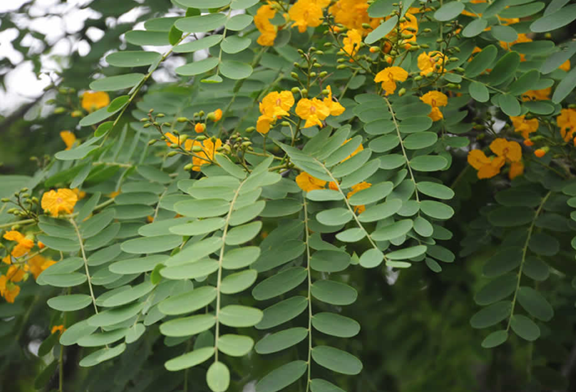

Flora
La selva se organiza en estratos según la altitud. En el nivel más bajo, se encuentra el bosque chaqueño serrano con especies como el horco quebracho y el atamisque. Luego sigue la selva de transición con tipas y pacaraes, y la selva montana, que alberga cedros y nogales. A partir de los 800 metros, predominan las mirtáceas, y por encima de 1.500 metros, crecen pinos del cerro y queñoas. La biodiversidad incluye numerosas epífitas, como bromelias y orquídeas, y en las cumbres, se encuentran pastizales serranos.
- 
-